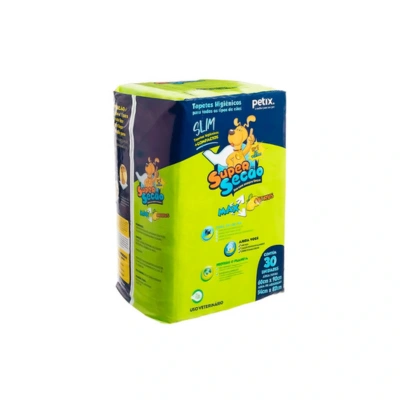

Tapete Higiênico Super Secão Max Citrus Slim para Cães

Preço: R$ 86,99
- Indicado para cães;
- Mais fininho e fácil de guardar;
- Ideal para quem faz trocas mais frequentes do tapete no ambiente.
- Alças no pacote que facilitam para levar para qualquer lugar;
- Gel superabsorvente;
- Atrativo canino que faz com que o seu pet encontre o tapete e tenha vontade de fazer xixi nele;
- Fitas adesivas em todas as extremidades do tapete, que podem ser coladas no piso ou na parede, caso seu pet levante a pata para fazer xixi;
- Cheirinho de citrus que perfuma o ambiente.